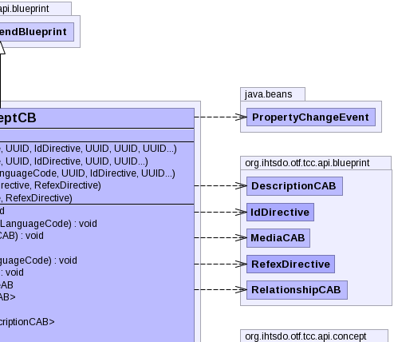

- java.lang.Object
-
- org.ihtsdo.otf.tcc.api.blueprint.CreateOrAmendBlueprint
-
- org.ihtsdo.otf.tcc.api.blueprint.ConceptCB
-
- All Implemented Interfaces:
- PropertyChangeListener, EventListener
public final class ConceptCB extends CreateOrAmendBlueprint
The Class ConceptCB contains methods for creating a concept blueprint. This blueprint can be constructed into a type ofConceptChronicleBI. This is the preferred method for creating new concepts. Use ConceptAttributeAB to amend concept attributes if the concept already exists.- See Also:
TerminologyBuilderBI,ConceptChronicleBI,ConceptAttributeAB-


-
-
Field Summary
Fields Modifier and Type Field and Description static UUIDconceptSpecNamespace-
Fields inherited from class org.ihtsdo.otf.tcc.api.blueprint.CreateOrAmendBlueprint
idDirective, pcs, properties, referencedComponent, refexDirective
-
-
Constructor Summary
Constructors Constructor and Description ConceptCB(ConceptVersionBI conceptVersion, IdDirective idDirective, RefexDirective refexDirective)ConceptCB(ConceptVersionBI conceptVersion, UUID newConceptUuid, IdDirective idDirective, RefexDirective refexDirective)Instantiates a new concept blueprint based on the givenconceptVersion.ConceptCB(List<String> fullySpecifiedNames, List<String> preferredNames, LanguageCode langCode, UUID isaTypeUuid, IdDirective idDirective, UUID... parentUuids)Instantiates a new concept blueprint using uuid values to specify the new concept.ConceptCB(String fullySpecifiedName, String preferredName, LanguageCode langCode, UUID isaTypeUuid, IdDirective idDirective, UUID moduleUuid, UUID... parentUuids)Instantiates a new concept blueprint using uuid values to specify the new concept.ConceptCB(String fullySpecifiedName, String preferredName, LanguageCode langCode, UUID isaTypeUuid, IdDirective idDirective, UUID moduleUuid, UUID conceptUuid, UUID... parentUuids)
-
Method Summary
Methods Modifier and Type Method and Description voidaddDescriptionCAB(DescriptionCAB descriptionBlueprint)Adds a description blueprint to the list of description blueprints associated with this concept blueprint.voidaddFullySpecifiedName(DescriptionCAB fullySpecifiedNameBlueprint, LanguageCode dialect)Adds a description blueprint to use for the fully specified name (FSN) description associated with this concept blueprint.voidaddFullySpecifiedNameCAB(DescriptionCAB fullySpecifiedNameBlueprint)Adds a fully specified name description blueprint to the list of description blueprints associated with this concept blueprint.voidaddMediaCAB(MediaCAB mediaBlueprint)Adds a media blueprint to the list of media blueprints associated with this concept blueprint.voidaddPreferredName(DescriptionCAB perferredNameBlueprint, LanguageCode dialect)Adds a description blueprint to use for the preferred name description associated with this concept blueprint.voidaddPreferredNameCAB(DescriptionCAB preferredNameBlueprint)Adds a preferred name description blueprint to the list of description blueprints associated with this concept blueprint.ConceptAttributeABgetConceptAttributeAB()Gets the concept attribute blueprint associated with this concept blueprint.List<DescriptionCAB>getDescriptionCABs()Gets the description blueprints associated with this concept blueprint.StringgetFullySpecifiedName()Gets the text of fully specified name associated with this concept blueprint.List<DescriptionCAB>getFullySpecifiedNameCABs()Returns a list of the fully specified name blueprints associated with this concept blueprint.UUIDgetIsaType()Gets the uuid of isa type to use for the parent relationships associated with this concept blueprint.StringgetLang()Gets a two character abbreviation of the language of the descriptions associated with this concept blueprint.List<MediaCAB>getMediaCABs()Gets the media blueprints associated with this concept blueprint.List<RelationshipCAB>getParentCABs()Generates relationship blueprints representing the parent relationships of this concept blueprint.Collection<UUID>getParents()Gets the uuids of parent concept for this concept blueprint.StringgetPreferredName()Gets the text of the preferred name description associated with this concept blueprint.List<DescriptionCAB>getPreferredNameCABs()Gets a list of the preferred name blueprints associated with this concept blueprint.List<RelationshipCAB>getRelationshipCABs()Gets a list of relationship blueprints associated with this concept blueprint.booleanisAnnotationRefexExtensionIdentity()Method descriptionbooleanisDefined()Checks if this concept blueprint is marked as defined.booleanisInitialCaseSensitive()Checks if the descriptions associated with this concept are marked as initial case sensitive.DescriptionCABmakeFullySpecifiedNameCAB(IdDirective idDirective)Generates a description blueprint representing the fully specified name of this blueprint.DescriptionCABmakePreferredCAB(IdDirective idDirective)Generates a description blueprint representing the preferred name of this concept blueprint.voidpropertyChange(PropertyChangeEvent propertyChangeEvent)Listens for a property change event in any of the component blueprint classes and recomputes the concept blueprint's computed uuid if a dependent component has changed.voidrecomputeUuid()Resets the enclosing or source concepts for the components on this concept.voidsetAnnotationRefexExtensionIdentity(boolean annotationRefexExtensionIdentity)Method descriptionvoidsetConceptAttributeAB(ConceptAttributeAB conceptAttributeBlueprint)Adds a concept attribute blueprint to the list of concept attribute blueprints associated with this concept blueprint.voidsetDefined(boolean defined)Marks this concept blueprint as definedvoidsetFullySpecifiedName(String fullySpecifiedName)Sets the text to use in the fully specified name (FSN) associated with this concept blueprint.voidsetInitialCaseSensitive(boolean initialCaseSensitive)Marks the descriptions associated with this concept are marked as initial case sensitive.voidsetIsaType(UUID isaTypeUuid)Sets the uuid of isa type to use for the parent relationships associated with this concept blueprint.voidsetLang(String lang)Sets the language of the descriptions associated with this concept blueprint.voidsetPreferredName(String preferredName)Sets the text of the preferred name associated with this concept blueprint.voidsetRelationshipCAB(RelationshipCAB relationshipBlueprint)Adds a relationship blueprint to the list of relationship blueprints associated with this concept blueprint.voidupdateFullySpecifiedName(String newFullySpecifiedName, DescriptionCAB fullySpecifiedNameBlueprint, LanguageCode dialect)Updates an the text associated with the specified fully specified name description blueprint.voidupdatePreferredName(String newPreferredName, DescriptionCAB preferredNameBlueprint, LanguageCode dialect)Updates an the text associated with the specified preferred name description blueprint.-
Methods inherited from class org.ihtsdo.otf.tcc.api.blueprint.CreateOrAmendBlueprint
addAnnotationBlueprint, addExtraUuid, addLongId, addPropertyChangeListener, addPropertyChangeListener, addStringId, getAnnotationBlueprints, getComponentNid, getComponentUuid, getComponentUUID, getIdMap, getInt, getPrimoridalUuidString, getPrimoridalUuidString, getProperties, getReferencedComponent, getStatus, getUuid, removePropertyChangeListener, removePropertyChangeListener, replaceAnnotationBlueprints, setComponentUuid, setComponentUuidNoRecompute, setCurrent, setReferencedComponent, setRetired, setStatus
-
-
-
-
Field Detail
-
conceptSpecNamespace
public static final UUID conceptSpecNamespace
-
-
Constructor Detail
-
ConceptCB
public ConceptCB(String fullySpecifiedName, String preferredName, LanguageCode langCode, UUID isaTypeUuid, IdDirective idDirective, UUID moduleUuid, UUID... parentUuids) throws IOException, InvalidCAB, ContradictionException
Instantiates a new concept blueprint using uuid values to specify the new concept.- Parameters:
fullySpecifiedName- the text to use for the fully specified namepreferredName- the text to use for the preferred namelangCode- the lang code representing the language of the descriptionisaTypeUuid- the uuid representing the relationship type to use for specifying the parent conceptsidDirective- generallyIdDirective.GENERATE_HASHfor new conceptsparentUuids- the uuids of the parent concept- Throws:
IOException- signals that an I/O exception has occurredInvalidCAB- if the any of the values in blueprint to make are invalidContradictionException- if more than one version is found for a view coordinate
-
ConceptCB
public ConceptCB(String fullySpecifiedName, String preferredName, LanguageCode langCode, UUID isaTypeUuid, IdDirective idDirective, UUID moduleUuid, UUID conceptUuid, UUID... parentUuids) throws IOException, InvalidCAB, ContradictionException
-
ConceptCB
public ConceptCB(List<String> fullySpecifiedNames, List<String> preferredNames, LanguageCode langCode, UUID isaTypeUuid, IdDirective idDirective, UUID... parentUuids) throws IOException, InvalidCAB, ContradictionException
Instantiates a new concept blueprint using uuid values to specify the new concept. Allows multiple fully specified names and preferred names to be specified.- Parameters:
fullySpecifiedNames- a list of strings to use for the fully specified namespreferredNames- a list of strings to use for the preferred nameslangCode- the lang code representing the language of the descriptionisaTypeUuid- the uuid representing the relationship type to use for specifying the parent conceptsidDirective- generallyIdDirective.GENERATE_HASHfor new conceptsparentUuids- the uuids of the parent concept- Throws:
IOException- signals that an I/O exception has occurredInvalidCAB- if the any of the values in blueprint to make are invalidContradictionException- if more than one version is found for a view coordinate
-
ConceptCB
public ConceptCB(ConceptVersionBI conceptVersion, IdDirective idDirective, RefexDirective refexDirective) throws IOException, ContradictionException, InvalidCAB
-
ConceptCB
public ConceptCB(ConceptVersionBI conceptVersion, UUID newConceptUuid, IdDirective idDirective, RefexDirective refexDirective) throws IOException, ContradictionException, InvalidCAB
Instantiates a new concept blueprint based on the givenconceptVersion. Can specify a uuid for the new concept.- Parameters:
conceptVersion- the concept version to use to create this concept blueprintnewConceptUuid- the uuid representing the new conceptidDirective-refexDirective-- Throws:
IOException- signals that an I/O exception has occurredContradictionException- if more than one version is found for a given position or view coordinateInvalidCAB- if the any of the values in blueprint to make are invalid
-
-
Method Detail
-
getParents
public Collection<UUID> getParents()
Gets the uuids of parent concept for this concept blueprint.- Returns:
- the uuids of the parent concepts
-
propertyChange
public void propertyChange(PropertyChangeEvent propertyChangeEvent)
Listens for a property change event in any of the component blueprint classes and recomputes the concept blueprint's computed uuid if a dependent component has changed.- Specified by:
propertyChangein interfacePropertyChangeListener- Overrides:
propertyChangein classCreateOrAmendBlueprint- Parameters:
propertyChangeEvent- the property change event
-
recomputeUuid
public void recomputeUuid() throws NoSuchAlgorithmException, UnsupportedEncodingException, IOException, InvalidCAB, ContradictionExceptionResets the enclosing or source concepts for the components on this concept. Then recomputes the uuids of the components based on the new uuid of the concept.- Specified by:
recomputeUuidin classCreateOrAmendBlueprint- Throws:
NoSuchAlgorithmException- indicates a no such algorithm exception has occurredUnsupportedEncodingException- indicates an unsupported encoding exception has occurredIOException- signals that an I/O exception has occurredInvalidCAB- if the any of the values in blueprint to make are invalidContradictionException- if more than one version is found for a given position or view coordinate
-
getFullySpecifiedName
public String getFullySpecifiedName()
Gets the text of fully specified name associated with this concept blueprint.- Returns:
- the fully specified name text
-
setFullySpecifiedName
public void setFullySpecifiedName(String fullySpecifiedName)
Sets the text to use in the fully specified name (FSN) associated with this concept blueprint. Recomputes the uuid associated with this concept based on the updated FSN text.- Parameters:
fullySpecifiedName- the text to use for the fully specified name
-
addFullySpecifiedName
public void addFullySpecifiedName(DescriptionCAB fullySpecifiedNameBlueprint, LanguageCode dialect) throws NoSuchAlgorithmException, UnsupportedEncodingException, IOException, InvalidCAB, ContradictionException
Adds a description blueprint to use for the fully specified name (FSN) description associated with this concept blueprint. Recomputes the uuid associated with this concept based on the updated FSN text. Adds the appropriate language/dialect refexes based on the given dialect code (only supports en-us and en-gb). This method does not remove existing FSN blueprints that are already associated with this concept blueprint.- Parameters:
fullySpecifiedNameBlueprint- the description blueprint for the fully specified name descriptiondialect- the language code representing the dialect of the FSN- Throws:
NoSuchAlgorithmException- indicates a no such algorithm exception has occurredUnsupportedEncodingException- indicates an unsupported encoding exception has occurredIOException- signals that an I/O exception has occurredInvalidCAB- if the any of the values in blueprint to make are invalidContradictionException- if more than one version is found for a given position or view coordinate
-
updateFullySpecifiedName
public void updateFullySpecifiedName(String newFullySpecifiedName, DescriptionCAB fullySpecifiedNameBlueprint, LanguageCode dialect) throws NoSuchAlgorithmException, UnsupportedEncodingException, IOException, InvalidCAB, ContradictionException
Updates an the text associated with the specified fully specified name description blueprint. Removes previous dialect refexes associated with the FSN blueprint and remakes them with the updated text.- Parameters:
newFullySpecifiedName- the new text to use for the updatefullySpecifiedNameBlueprint- the FSN description blueprint to updatedialect- language code of FSN dialect, leave null if dialect isn't changing- Throws:
NoSuchAlgorithmException- indicates a no such algorithm exception has occurredUnsupportedEncodingException- indicates an unsupported encoding exception has occurredIOException- signals that an I/O exception has occurredInvalidCAB- if the any of the values in blueprint to make are invalidContradictionException- if more than one version is found for a given position or view coordinate
-
getIsaType
public UUID getIsaType()
Gets the uuid of isa type to use for the parent relationships associated with this concept blueprint.- Returns:
- the isa type uuid
-
setIsaType
public void setIsaType(UUID isaTypeUuid)
Sets the uuid of isa type to use for the parent relationships associated with this concept blueprint.- Parameters:
isaTypeUuid- the isa type uuid
-
getLang
public String getLang()
Gets a two character abbreviation of the language of the descriptions associated with this concept blueprint.- Returns:
- a two character abbreviation of the language of the descriptions
-
setLang
public void setLang(String lang)
Sets the language of the descriptions associated with this concept blueprint.- Parameters:
lang- a two character abbreviation of the language of the descriptions
-
getPreferredName
public String getPreferredName()
Gets the text of the preferred name description associated with this concept blueprint.- Returns:
- the preferred name text
-
setPreferredName
public void setPreferredName(String preferredName)
Sets the text of the preferred name associated with this concept blueprint.- Parameters:
preferredName- the new preferred name text
-
addPreferredName
public void addPreferredName(DescriptionCAB perferredNameBlueprint, LanguageCode dialect) throws NoSuchAlgorithmException, UnsupportedEncodingException, IOException, InvalidCAB, ContradictionException
Adds a description blueprint to use for the preferred name description associated with this concept blueprint. Recomputes the uuid associated with this concept based on the updated preferred name text. Adds the appropriate language/dialect refexes based on the given dialect code (only supports en-us and en-gb). This method does not remove existing preferred name blueprints that are already associated with this concept blueprint.- Parameters:
perferredNameBlueprint- the description blueprint for the preferred name descriptiondialect- the language code representing the dialect of the preferred term- Throws:
NoSuchAlgorithmException- indicates a no such algorithm exception has occurredUnsupportedEncodingException- indicates an unsupported encoding exception has occurredIOException- signals that an I/O exception has occurredInvalidCAB- if the any of the values in blueprint to make are invalidContradictionException- if more than one version is found for a given position or view coordinate
-
updatePreferredName
public void updatePreferredName(String newPreferredName, DescriptionCAB preferredNameBlueprint, LanguageCode dialect) throws NoSuchAlgorithmException, UnsupportedEncodingException, IOException, InvalidCAB, ContradictionException
Updates an the text associated with the specified preferred name description blueprint. Removes previous dialect refexes associated with the preferred name blueprint and remakes them with the updated text.- Parameters:
newPreferredName- the new text to use for the updatepreferredNameBlueprint- the preferred name description blueprint to updatedialect- language code of preferred name dialect, leave null if dialect isn't changing- Throws:
NoSuchAlgorithmException- indicates a no such algorithm exception has occurredUnsupportedEncodingException- indicates an unsupported encoding exception has occurredIOException- signals that an I/O exception has occurredInvalidCAB- if the any of the values in blueprint to make are invalidContradictionException- if more than one version is found for a given position or view coordinate
-
isDefined
public boolean isDefined()
Checks if this concept blueprint is marked as defined.- Returns:
true, if the concept is defined
-
setDefined
public void setDefined(boolean defined)
Marks this concept blueprint as defined- Parameters:
defined- set totrueif the concept is defined
-
isInitialCaseSensitive
public boolean isInitialCaseSensitive()
Checks if the descriptions associated with this concept are marked as initial case sensitive.- Returns:
true, if the descriptions are initial case sensitive
-
setInitialCaseSensitive
public void setInitialCaseSensitive(boolean initialCaseSensitive)
Marks the descriptions associated with this concept are marked as initial case sensitive.- Parameters:
initialCaseSensitive- set totrueto mark the descriptions as initial case sensitive
-
makeFullySpecifiedNameCAB
public DescriptionCAB makeFullySpecifiedNameCAB(IdDirective idDirective) throws IOException, InvalidCAB, ContradictionException
Generates a description blueprint representing the fully specified name of this blueprint.- Parameters:
idDirective-- Returns:
- a description blueprint representing the fully specified name
- Throws:
IOException- signals that an I/O exception has occurredInvalidCAB- if the any of the values in blueprint to make are invalidContradictionException- if more than one version is found for a given position or view coordinate
-
makePreferredCAB
public DescriptionCAB makePreferredCAB(IdDirective idDirective) throws IOException, InvalidCAB, ContradictionException
Generates a description blueprint representing the preferred name of this concept blueprint.- Parameters:
idDirective-- Returns:
- a description blueprint representing the preferred name
- Throws:
IOException- signals that an I/O exception has occurredInvalidCAB- if the any of the values in blueprint to make are invalidContradictionException- if more than one version is found for a given position or view coordinate
-
getParentCABs
public List<RelationshipCAB> getParentCABs() throws IOException, InvalidCAB, ContradictionException
Generates relationship blueprints representing the parent relationships of this concept blueprint.- Returns:
- a list of relationship blueprints representing the parent relationships
- Throws:
IOException- signals that an I/O exception has occurredInvalidCAB- if the any of the values in blueprint to make are invalidContradictionException- if more than one version is found for a given position or view coordinate
-
getFullySpecifiedNameCABs
public List<DescriptionCAB> getFullySpecifiedNameCABs() throws IOException, InvalidCAB, ContradictionException
Returns a list of the fully specified name blueprints associated with this concept blueprint. If no FSN blueprints are associated, one will be generated based on the associated FSN text.- Returns:
- a list of fully specified name blueprints
- Throws:
IOException- signals that an I/O exception has occurredInvalidCAB- if the any of the values in blueprint to make are invalidContradictionException- if more than one version is found for a given position or view coordinate
-
getPreferredNameCABs
public List<DescriptionCAB> getPreferredNameCABs() throws IOException, InvalidCAB, ContradictionException
Gets a list of the preferred name blueprints associated with this concept blueprint. If no preferred name blueprints are associated, one will be generated based on the associated preferred name text.- Returns:
- a list of preferred name blueprints
- Throws:
IOException- signals that an I/O exception has occurredInvalidCAB- if the any of the values in blueprint to make are invalidContradictionException- if more than one version is found for a given position or view coordinate
-
getDescriptionCABs
public List<DescriptionCAB> getDescriptionCABs()
Gets the description blueprints associated with this concept blueprint.- Returns:
- a list of description blueprints
-
getRelationshipCABs
public List<RelationshipCAB> getRelationshipCABs() throws IOException, InvalidCAB, ContradictionException
Gets a list of relationship blueprints associated with this concept blueprint. If not relationships blueprints are associated, they will be generated for the relationships to the associated parent concepts.- Returns:
- a list of parent relationship blueprints
- Throws:
IOException- signals that an I/O exception has occurredInvalidCAB- if the any of the values in blueprint to make are invalidContradictionException- if more than one version is found for a given position or view coordinate
-
getMediaCABs
public List<MediaCAB> getMediaCABs()
Gets the media blueprints associated with this concept blueprint.- Returns:
- a list of media blueprints
-
getConceptAttributeAB
public ConceptAttributeAB getConceptAttributeAB()
Gets the concept attribute blueprint associated with this concept blueprint.- Returns:
- the concept attribute blueprint
-
addFullySpecifiedNameCAB
public void addFullySpecifiedNameCAB(DescriptionCAB fullySpecifiedNameBlueprint)
Adds a fully specified name description blueprint to the list of description blueprints associated with this concept blueprint.- Parameters:
fullySpecifiedNameBlueprint- the fully specified name blueprint to add
-
addPreferredNameCAB
public void addPreferredNameCAB(DescriptionCAB preferredNameBlueprint)
Adds a preferred name description blueprint to the list of description blueprints associated with this concept blueprint.- Parameters:
preferredNameBlueprint- the preferred name blueprint to add
-
addDescriptionCAB
public void addDescriptionCAB(DescriptionCAB descriptionBlueprint)
Adds a description blueprint to the list of description blueprints associated with this concept blueprint.- Parameters:
descriptionBlueprint- the description blueprint to add
-
setRelationshipCAB
public void setRelationshipCAB(RelationshipCAB relationshipBlueprint)
Adds a relationship blueprint to the list of relationship blueprints associated with this concept blueprint.- Parameters:
relationshipBlueprint- the relationship blueprint to add
-
addMediaCAB
public void addMediaCAB(MediaCAB mediaBlueprint)
Adds a media blueprint to the list of media blueprints associated with this concept blueprint.- Parameters:
mediaBlueprint- the media blueprint to add
-
setConceptAttributeAB
public void setConceptAttributeAB(ConceptAttributeAB conceptAttributeBlueprint)
Adds a concept attribute blueprint to the list of concept attribute blueprints associated with this concept blueprint.- Parameters:
conceptAttributeBlueprint- the concept attribute blueprint to add
-
isAnnotationRefexExtensionIdentity
public boolean isAnnotationRefexExtensionIdentity()
Method description- Returns:
-
setAnnotationRefexExtensionIdentity
public void setAnnotationRefexExtensionIdentity(boolean annotationRefexExtensionIdentity)
Method description
-
-